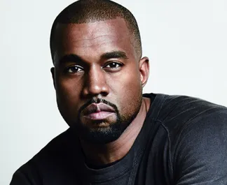
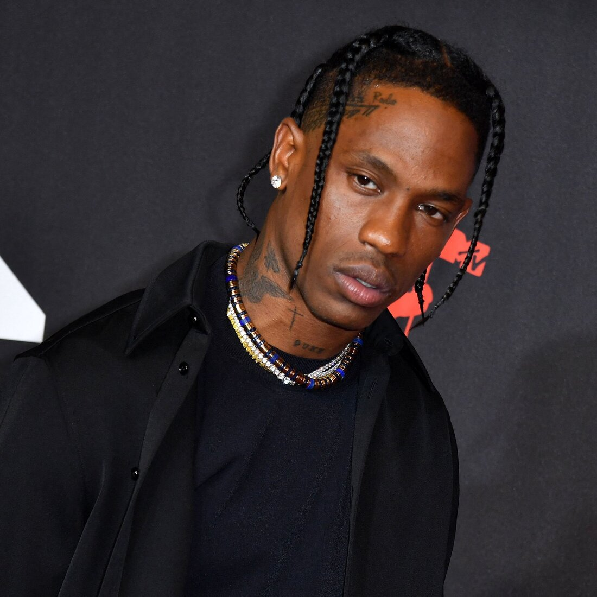

Kanye West
Ye (nascido Kanye Omari West; Atlanta, 8 de junho de 1977), mais conhecido como Kanye West, é um rapper, cantor, compositor, produtor musical, político e designer de moda americano.

Kendrick Lamar
Kendrick Lamar Duckworth (Compton, 17 de junho de 1987) é um rapper, compositor e produtor musical norte-americano. Vencedor de 17 prêmios Grammy, é um dos dois únicos músicos fora da música clássica a receber o Prémio Pulitzer, sendo considerado como um dos artistas mais influentes de sua geração, além de um dos maiores rappers e letristas de todos os tempos.

Eminem
Marshall Bruce Mathers III, mais conhecido pelo seu nome artístico Eminem (St. Joseph, 17 de outubro de 1972), é um rapper, compositor, produtor musical e ator estadunidense. Adquiriu rápida popularidade em 1999 com o lançamento do disco The Slim Shady LP, o qual venceu o Grammy Award de Melhor Álbum de Rap do ano.

Tupac Shakur (2Pac)
Tupac Amaru Shakur (nascido Lesane Parish Crooks; Nova Iorque, 16 de junho de 1971 – Las Vegas, 13 de setembro de 1996), mais conhecido pelos seus nomes artísticos 2Pac, Makaveli ou apenas Pac, foi um rapper, ator e compositor norte-americano, considerado por muitos como um dos melhores e mais importantes rappers de todos os tempos.

Travis Scott
Jacques Berman Webster II (Houston, 30 de abril de 1991) mais conhecido por seu nome artístico Travis Scott (antes estilizado como Travi$ Scott), é um rapper, cantor, compositor e produtor musical norte-americano.

Snoop Dogg
Calvin Cordozar Broadus, Jr. (Long Beach, 20 de outubro de 1971), conhecido pelos nomes artísticos Snoop Doggy Dogg, Snoop Dogg, Snoop Lion e Snoopzilla é um rapper, cantor, compositor, produtor musical e ator norte-americano.

Drake
Aubrey Drake Graham (Toronto, 24 de outubro de 1986), conhecido simplesmente como Drake, é um rapper, cantor, compositor, produtor musical, ator e empresário canadense.

Jay-Z
Shawn Corey Carter (Nova Iorque, 4 de dezembro de 1969), mais conhecido pelo seu nome artístico JAY-Z (também estilizado Jay Z ou Jay-Z), é um rapper, compositor, produtor e empresário norte-americano.

Nicki Minaj
Onika Tanya Maraj (Saint James, 8 de dezembro de 1982), conhecida por seu nome artístico Nicki Minaj, é uma rapper, cantora, compositora, modelo e atriz trinidiana radicada nos Estados Unidos.
Por mais que haja mais rappers famosos, coloca-los todos aqui levaria um tempão, então se quiser conhecer mais rappers e suas discografias, navegue a página dos melhores albuns e conheça mais sobre! E se quiser saber ainda mais, que tal conhecer alguns rappers brasileiros? É só acessar a pagina de rappers do Brasil!